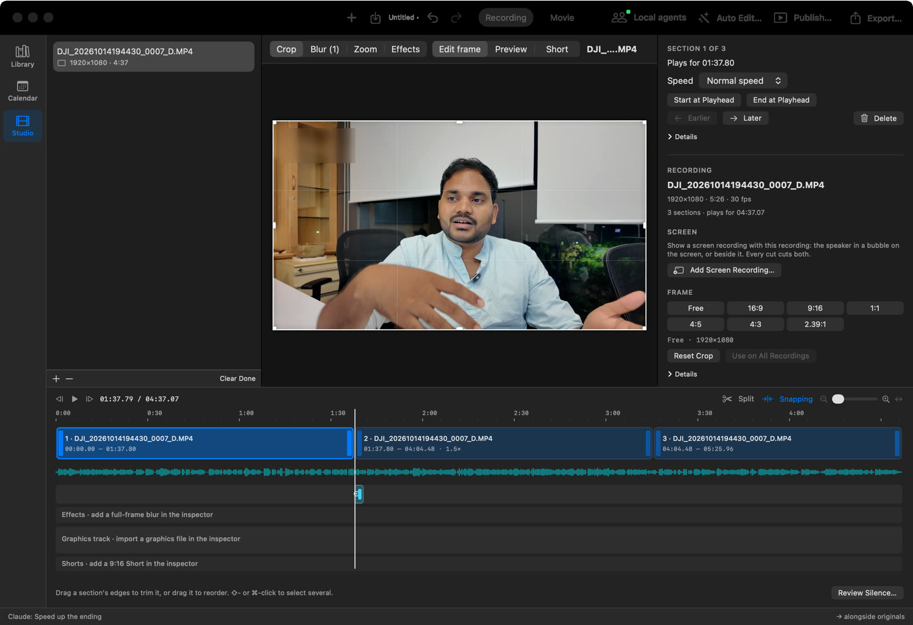
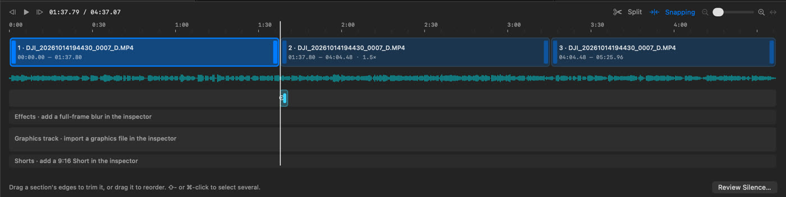
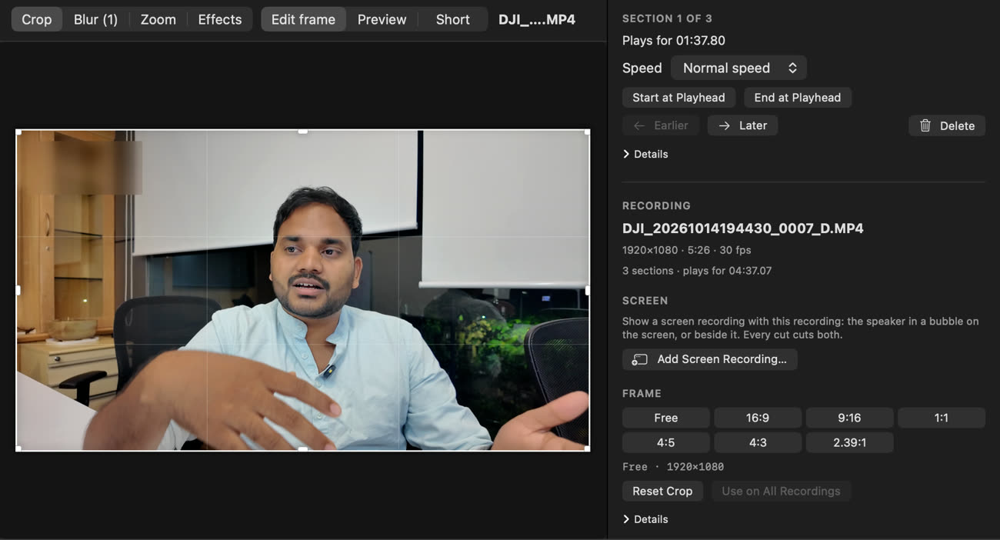
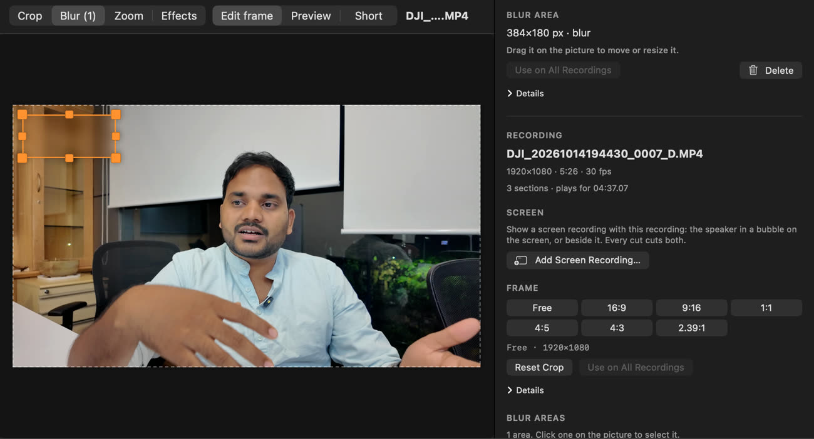
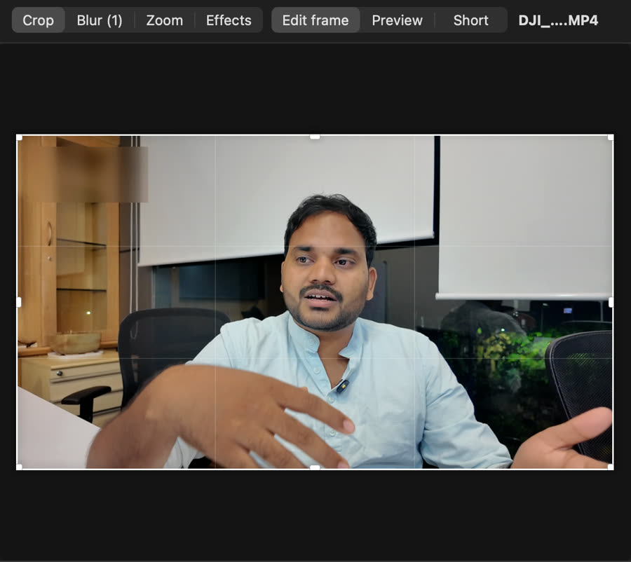

Tracker
How the Studio changes, step by step. Each step adds real pictures of the app, so the page keeps the history of the UI.
How the Studio changed
Click a version to show it in the editor below, next to the proposal.
Decisions
The editor, then and proposed
All pictures have the same size, so you can switch between them and compare. Before and each built step are real renders of the app. The numbers go to the sections below.

- Split: hover the timeline, then click the scissors on the playhead. Or press ⌘B.
- Crop: press the crop tool. Drag the box, pick a ratio, then Apply.
- Changes: click an empty part of a track. The inspector lists every change with a switch.
- Speed: select a section, open the Speed tab and pick 2×. The timeline closes up.
- Compare: press Before/After in the player bar.
- Undo: ⌘Z and ⇧⌘Z work after you click the mockup.
Five changes, in short
Size is a rough guess of the work: S is a day or two, M is about a week, L is more.
| # | Area | Now | Proposed | Size |
|---|---|---|---|---|
| 1 | Layout | Recordings list on the left. Two pictures: Edit frame and Preview. Crop, Blur, Zoom and Effects are modes. | Media panel with tabs. One player. The inspector at full height on the right. No modes: the selection sets what you edit. | M |
| 2 | Timeline | Lanes with no names. Sections show the file name. A thin waveform. Only Split, Snapping and zoom above it. | Track headers, a tool bar, a filmstrip in each section, a tall Audio track, badges and split on the playhead. | L |
| 3 | Crop | A mode on a still frame. Ratio buttons are in the inspector, far from the picture. | A Crop tool. Crop in the player with ratio chips, Cancel and Apply. A crop badge on the timeline. | M |
| 4 | Changes on the video | One long inspector. The crop and blur areas are not on the timeline. You cannot turn one change off. | Inspector tabs. Each change has a switch and a reset. A list of all changes when nothing is selected. | M |
| 5 | Player | Transport above the timeline. Compare is for colour only. | A player bar: transport, Crop, Before/After, 16:9 or 9:16, safe zones, snapshot. | S |
Layout: four panels and one player
Filmora has four panels. Media and Player are at the top left, the Timeline is under them, and the Property panel uses the full height on the right. YamVideo has the same four places, but each one does a different job.
- The left pane lists recordings. With one recording, most of the pane is empty.
- The picture has two views. Edit frame shows a still frame to crop and mark. Preview plays the edit. You switch between them.
- Crop, Blur, Zoom and Effects are modes of the picture. You pick a mode before you can edit on the picture.
- The inspector shows the selection, then every setting of the recording in one long scroll.
- Replace the recordings list with a Media panel with tabs: Media, Graphics, Logos, Effects. Click + on an item to add it at the playhead, or drag it to the timeline.
- Use one player. It plays the edit, and you edit on it. What you select on the timeline sets what the handles on the picture do.
- Remove the Crop / Blur / Zoom / Effects modes. Select a block on the timeline, or use a tool in the timeline tool bar.
- Put the inspector at full height on the right, as Filmora does. The timeline goes under the Media panel and the player. Keep the Library, Calendar and Studio rail and the Auto Edit, Publish and Export buttons.
From Filmora: the Property panel shows the selected clip only and uses the full height of the window. Panels resize when you drag their edges. Filmora 16 has nine layout presets.
Keep from YamVideo: the Movie workspace, Local agents and the status line for agent changes.
Timeline: tracks you can read
This is the largest change. The edit model stays the same: the sections have no gaps. Only what you see and where the tools are changes.

- Lanes have no names or controls. An empty lane shows a help sentence, for example "Effects · add a full-frame blur in the inspector".
- Each section shows the file name and the source times, not the picture.
- The waveform is a thin line under the sections. Pauses are hard to see.
- The bar above has Split, Snapping and zoom only. Speed, Delete and order are in the inspector.
- A 2 s zoom on a 4:37 timeline is a very small block. It is hard to click.
- Track headers at the left: icon, name, eye (hide in the player) and lock. The Audio track also has mute.
- Tracks from top to bottom: Graphics, Effects, Zoom, Video, Audio, Captions. Shorts show as ranges under the ruler.
- Video sections show a filmstrip, the section number and badges: speed, crop, blur, colour.
- The Audio track shows a tall waveform from your recording, linked to the sections. You can see the pauses and cut on them.
- A tool bar: Undo, Redo, Delete, Split, Crop, Speed, Zoom, Blur, Marker, Auto Edit, Review Silence. Then Snapping, track height and zoom.
- Hover the timeline to show a scissors button on the playhead. Click it to split.
- An empty track folds to a thin row with + Add. A track that is in use shows its blocks.
From Filmora: the bar above the timeline, track headers with lock, mute and hide, the scissors on the playhead, filmstrips in clips, markers on the ruler and Zoom to Fit. Filmora shows linked audio as a strip at the bottom of the video clip. YamVideo gets a tall Audio track, because you cut talking-head videos on the pauses.
Keep from YamVideo: a deleted section always closes its gap, so YamVideo needs no magnetic or ripple switch. Zoom, Effects, Graphics and Shorts stay YamVideo's own tracks.
Crop: in the player, with Apply
Filmora opens a Crop and Zoom window from the Crop tool or ⌥C. You set the box, pick a ratio and press Apply. We propose the same controls inside the player, as Final Cut Pro does, so the timeline stays in view.

- To crop, select Crop mode and Edit frame. Then drag the box on a still frame.
- The ratio buttons (Free, 16:9, 9:16, 1:1, 4:5, 4:3, 2.39:1) are in the inspector's Frame section, far from the picture.
- There is no Cancel or Apply. Each drag changes the crop at once. Undo works.
- The crop applies to the whole recording. The timeline does not show it.
- Press Crop in the timeline tool bar or the player bar, or press ⌥C. The player shows the whole frame with the crop box on it.
- Ratio chips sit under the picture, with the size in pixels, Reset, Cancel and Apply.
- Drag in the box to move it. Drag a corner to change its size. The ratio stays the same unless you pick Free.
- After Apply, each video section shows a crop badge. The player shows the cropped picture.
- Filmora's Pan & Zoom is YamVideo's Zoom. Zooms stay on their own track, with their eased push-ins.
From Filmora: a Crop and Zoom window with Crop and Pan & Zoom tabs, a Ratio menu (Original, 16:9, 1:1, 9:16, 4:3, 3:4, 21:9, 4:5, Custom), W × H fields, Reset, Cancel and Apply.
Your decisions: crop in the player or in a window, and crop for the whole recording or for each section. See the questions at the end.
Changes on the video: see them, turn them off, reset them
In Filmora, each module in the Property panel has a switch and a reset button, and a clip with keyframes shows a badge. You can see what is applied, and turn it off to compare.

- The inspector is one long scroll: Recording, Screen, Frame, Blur areas, Zooms, Graphics, Shorts, Captions, Colour, Effects and markers.
- The crop and the blur areas are not on the timeline.
- You cannot turn one change off to compare. Colour has Original, Corrected and Compare. Other changes do not.
- Inspector tabs for a section: Video, Audio, Speed, Colour. A zoom, a graphic, an effect, a Short or a marker has its own panel.
- Each change is a row with an on/off switch, a summary and a reset button. Off hides the change in the player.
- A change that applies to all sections (crop, colour, blur areas, loudness) shows an All sections tag.
- With nothing selected, the inspector shows Changes on this video: one list of every change, each with its switch.
- Badges on the timeline show the changes on each section.
From Filmora: property tabs (Video, Audio, Speed, Animation, Color). Each module header has an on/off switch, a collapse arrow, a reset ↺ and a keyframe ◇. You turn a module on before you edit it. Before/After compare is for colour only.
New in YamVideo: the Changes list. Filmora does not have one list. It fits YamVideo because agents also make changes, and you need to see all of them in one place.
Player: one bar under the picture
Filmora puts the player controls directly under the preview. YamVideo has them above the timeline, and the view controls at the top of the picture.

- Frame back, play, frame forward and the time are above the timeline, far from the picture.
- Edit frame, Preview and Short are three views at the top of the picture.
- YouTube's buttons for a Short show only in the Short view. Original / Corrected floats over the picture.
- A player bar under the picture: the time, frame back, play, frame forward.
- Then the tools for the picture: Crop, Before/After, 16:9 or 9:16, Safe zones (YouTube's buttons), Snapshot (a frame for the thumbnail maker) and full screen.
- A quality menu (Full, ½, ¼) at the top right of the picture, for smooth playback on long recordings.
- Before/After compares the frame with and without all changes, not only colour.
From Filmora: frame back, frame forward, play and stop at the left of the bar. Project ratio, mark in and out, display settings (safe zones, zoom), snapshot, volume and full screen at the right. Quality (Full, ½, ¼) at the top.
Keep from YamVideo: the Short view with YouTube's buttons. It becomes the 9:16 switch and the Safe zones button.
Shortcuts
Keep the Mac keys YamVideo has. Add Filmora's keys where YamVideo has none. When Filmora's key is a Windows habit, use the Mac form.
| Action | Filmora (Mac) | YamVideo now | Proposed |
|---|---|---|---|
| Split at the playhead | ⌘B | ⌘B | ⌘B and the scissors on the playhead |
| Delete the selection | ⌫ | ⌫ | ⌫. A section always closes its gap. |
| Ripple delete | ⇧⌫ | Not needed | Not needed |
| Crop | ⌥C | None | ⌥C |
| Speed | ⌥R | None | ⌥R opens the Speed tab |
| Trim start / end to the playhead | ⌥[ ⌥] | ⇧⌘[ ⇧⌘] | Both |
| Add / edit a marker | M ⇧M | M ⇧M | Same |
| Mark in / out | I O | None | I O set a Short's start and end |
| Zoom the timeline in / out / fit | ⌘= ⌘− ⇧Z | ⌘= ⌘− ⇧Z | Same |
| Play / pause, one frame | Space ← → | Space ← → | Same |
| Snapshot | ⌃⌥S | None | ⌃⌥S |
| Snapping | None | Menu only | N, as in Final Cut Pro and Resolve |
Filmora keys come from Filmora's official Mac shortcut list. Filmora 16 also lets you change them.
What we do not copy
Filmora is a general editor. YamVideo edits talking-head recordings with agents. Some Filmora parts do not fit.
No magnetic or ripple switch
YamVideo sections have no gaps. A delete always closes the gap, so the switch has nothing to do.
One video track
No stacked videos for now. Graphics, Zoom and Effects are their own tracks. Stacked video is a later design step.
No general keyframes
Zooms already ease in and out. The Zoom track shows each ease as a ramp. A keyframe editor adds a lot of work for little use here.
Every tool is also a command
Each new button must have a yamvideoctl command, so an agent can make the same edit and you can see it in the Changes list.
Order of work
Each step is one PR and can ship alone. The first two steps do not change the project file.
Timeline tool bar, track headers and split on the playhead
MMove Delete, Speed and the add tools to the bar. Add headers with eye and lock. Fold empty tracks. Add badges and the filmstrip.
One player with a player bar, and Crop in the player
MMerge Edit frame and Preview. Remove the modes. Add Crop with ratio chips, Cancel and Apply, and Before/After.
Inspector tabs, switches, resets and the Changes list
MNeeds a saved on/off state for each change, so the project version goes up by one.
Media panel, Audio track and Captions track
LTabs for Media, Graphics, Logos and Effects with add and drag. A tall linked waveform. Caption blocks you can click to edit.
Your decisions
On 19 October you said "proceed with Proposed", so the work uses the answers marked here. To change one, pick another answer, copy your answers and paste them in our chat.